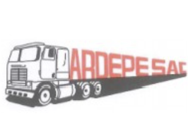

Actividad por conductor: conducción, detención, ralentí y distancia recorrida

| Conductor / Placa | Flota | Inicio de tramo | Fin de tramo | 🟢 Conducción | 🔵 Detenido (motor apagado) | 🟡 Detenido (motor encendido) | Distancia | Estado |
|---|---|---|---|---|---|---|---|---|
| Configura el rango de fechas y presiona Consultar. | ||||||||